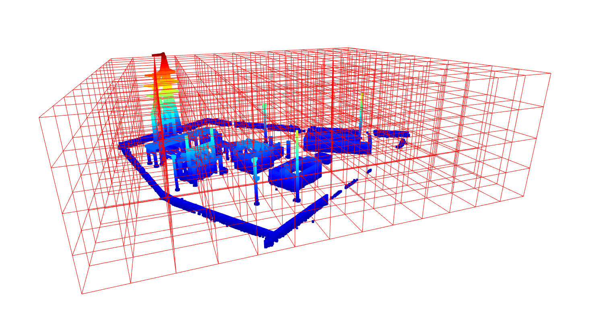

geomapi.tools.progresstools
Tools to asses the progress on (road) construction sites.
- geomapi.tools.progresstools.create_voxel_block_grid_and_raytrace(pcd, imageNode)
THIS CURRENTLY DOESN’T WORK BUT IS A PLACEHOLDER.
- Args:
pcd (_type_): _description_ imageNode (_type_): _description_
- geomapi.tools.progresstools.subdivide_pcd_per_box(pcd, size: List[float] = None, parts: List[int] = None) Tuple[List[int], List[int]]
Subdivide a point cloud according to a set of boxes (either by size of number of parts).
- Args:
pcd (las,dataframe or open3d): Point Cloud (only points are used) size (list[float], optional): X, Y and Z size of the subdivided boxes in meter e.g. [10,10,5]. parts (list[int], optional): X, Y and Z number of parts to divide the box in e.g. [7,7,1].
- Returns:
Tuple[List[int],List[int]]: pathLists with names formatted as ‘pcd_{a}_{b}_{c}_{d}’ that correspond to xyz order, idxLists with indices per box.
- geomapi.tools.progresstools.subdivide_pcd_per_octree(pcd, maxDepth: int = 4, lowEnd=0, highEnd=2000000) Tuple[List[int], List[int]]
Create an octree of various point clouds and subdivide it according to a voxel octree. For each depth level, the data is divided 8-fold. This function returns the indices per voxel if that node has a number of points between lowEnd and highEnd.
- Args:
pcd (las,dataframe or open3d): Point Cloud (only points are used) maxDepth (int, optional): depth of the octree. Defaults to 4 (this is also the maxDepth). lowEnd (int, optional): minimum number of points in a node for it to be added to the export. Defaults to 0. highEnd (int, optional): maximum number of points in a node for it to be added to the export. If this is surpassed, its children will be assessed. Defaults to 2000000.
- Returns:
Tuple[List[int],List[int]]: pathLists with names formatted as ‘pcd_{a}_{b}_{c}_{d}’ that correspond to the depth ,idxLists with indices per valid node
- geomapi.tools.progresstools.pcd_to_octree(pcd: open3d.geometry.PointCloud, maDepth: int = 7, colorUse: int = 0) open3d.geometry.Octree
Create octree of point cloud and optionally color it consistently.
- Args:
pcd (o3d.geometry.PointCloud): colorUse (int, optional): If 0, the colors per leafNode will be averaged. If 1, the dominant color per LeafNode will be retained (this is quite slow). Defaults to 0.
- Returns:
o3d.geometry.Octree:
- geomapi.tools.progresstools.capture_image_and_depth_viewer(pcdNode, imgNodes, imagePath, depthPath)
Visualizer currently is bugged in Open3D and doesn’t allow custom sizes.
- geomapi.tools.progresstools.assign_point_cloud_information(source_cloud: open3d.geometry.PointCloud, ref_clouds: List[open3d.geometry.PointCloud], class_names: List[int] = None) array
- geomapi.tools.progresstools.filter_img_classifcation_by_neighbors(predictions: array, shape: Tuple[int, int] = None, weight: float = 3) array
Filters an initial raster prediction based on the classification of surrounding values.
Every value is replaced by the most occuring value in the 9 surrounding raster values weighted by the initial value
- Args:
predictions (np.array): _description_ shape (Tuple[int,int]): shape of the raster weight (float, optional): influence of the initial value compared to neighboring values. Defaults to 3.
- Returns:
np.array: _description_
- geomapi.tools.progresstools.remap_color_images_to_masks(images: List[array], colorList: array = None) array
Remap the values of an image (RGB or grayscale) to indices given a colorList.
NOTE: this is slow and error prone
- Args:
1.images (List[np.array]): RGB or grayscale imagery.
2.colorList (np.array, optional): list with RGB or grayscale colors used for the remapping. If no colors are provided, the unique colors of the first image will be taken. Defaults to None.
- Returns:
np.array: image [m,n,1] with indices as mask
- geomapi.tools.progresstools.project_meshes_to_rgbd_images(meshes: List[open3d.geometry.TriangleMesh], imgNodes: List[ImageNode], scale: float = 1.0, fill_black: int = 0) Tuple[List[array], List[array]]
Project a set of meshes given camera parameters.

- Args:
1.meshes (List[o3d.geometry.TriangleMesh]): set of TriangleMeshes.
2.imgNodes (List[ImageNode]): should contain imageWidth,imageHeight,cartesianTransform and focalLength35mm
3.scale (float, optional): scale to apply to imagery (typically for downscaling). Defaults to 1.
4.fill_black (int, optional): Region to fill in black pixels. 5 is a good value.
- Returns:
Tuple[List[np.array],List[np.array]]: colorImages,depthImages
- geomapi.tools.progresstools.project_pcd_to_rgbd_images(pointClouds: List[open3d.geometry.Geometry], imgNodes: List[ImageNode], depth_max: float = 15, fill_black: int = 0) Tuple[List[array], List[array]]
Project a set of point cloud geometries given camera parameters. The given
- Args:
1.pointClouds (List[o3d.geometry.PointCloud]): set of o3d point clouds.
2.imgNodes (List[ImageNode]): should contain imageWidth,imageHeight,cartesianTransform and focalLength35mm
3.depth_max (float, optional): cut off distance. Defaults to 15m.
4.fill_black (int, optional): Region to fill in black pixels. 5 is a good value.
- Returns:
Tuple[List[np.array],List[np.array]]: colorImages,depthImages
- geomapi.tools.progresstools.get_average_cartesian_transform_ortho(list)
- geomapi.tools.progresstools.create_xy_grids(geometries: List[open3d.geometry.TriangleMesh], resolution: float = 0.1, direction: str = 'Down') array
Generates a grid of rays (x,y,z,nx,ny,nz) with a spatial resolution from a set of input meshes.
- Args:
1.geometries (List[o3d.geometry.TriangleMesh]): geometries to generate the grid from. grid will be placed at the highest of the lowest point.
2.resolution (float, optional): XY resolution of the grid. Default stepsize is 0.1m.
3.direction (str, optional): ‘Up’ or ‘Down’. Position and direction of the grid. If ‘Down’, the grid is placed at the highest point with the orientation looking downards (0,0,-1). Defaults to ‘Down’.
- Returns:
np.array[x*y,6]: grid of arrays (x,y,z,nx,ny,nz)
- geomapi.tools.progresstools.volume_mesh_BIM(depthmapFBIM: array, depthmapBimMin: array, depthmapBimMax: asarray, resolution: float = 0.1) array
- Calculate the volume per element , three different options where:
mesh is beneath the bim
mesh is above the bim
mesh is between the top and bottom of the bim
NOTE: heinder, move this to tools
- Args:
depthmapFBIM (np.array[:,1]): The distances between the grid per object and the top of the mesh.
depthmapBimMin (np.array[:,1]): The distances between the grid per object and the bottom of the bim.
depthmapBimMax (np.array[:,1]): The distances between the grid per object and the top of the bim.
resolution (np.array[:,1], optional): Resolution of the grid.Defaults to 0.1m.
- Returns:
array of volumes per bim object
- geomapi.tools.progresstools.volume_theoretical_BIM(depthmapBimMin: array, depthmapBimMax: asarray, resolution: float = 0.1) array
Calculate the theoretical volume per element (m³).
NOTE: heinder, move this to tools
- Args:
depthmapFBIM (np.array[:,1]): The distances between the grid per object and the top of the mesh.
depthmapBimMin (np.array[:,1]): The distances between the grid per object and the bottom of the bim.
resolution (np.array[:,1], optional): Resolution of the grid.Defaults to 0.1m.
- Returns:
array of theoretcial volumes per bim object
- geomapi.tools.progresstools.calculate_completion(volumeMeshBIM: array, volumeBIM: array) array
Calculate the percentual completion (%) using the theoretical and practical volumes of the bim objects.
NOTE: heinder, move this to tools
- Args:
volumeMeshBIM (np.array[:,1]): The volume between mesh and BIM.
volumeBIM (np.array[:,1]): The theoretical BIM.
- Returns:
array of completness [0-1]
- geomapi.tools.progresstools.color_BIMNode(completion, BIMNodes)
Colors the BIM mesh geometries in the computed LOA color
NOTE: heinder, move this to tools
- Args:
LOAs (_type_): results of the LOA analysis
BIMNodes (List[BIMNode]): List of the BIMNodes in the project
- Returns:
None
- geomapi.tools.progresstools.remove_edges_volume_calculation(depthmapDifference, pcdFlightMax, distance: int = 1)
NOTE: heinder, move this to tools
- geomapi.tools.progresstools.color_pointcloud_by_height(pointcloud: open3d.geometry.PointCloud, heights, buckets: int = 5, hmax: float = 10, buffer: float = 0.03)
Colors the resulting point cloud of the LOA analysis in a gradient by distance between the matched points from the reference and the source (very slow)
NOTE: heinder, move this to tools. this is a really crappy function
- Args:
pointcloud (o3d.geometry.PointCloud): Point cloud from the LOA determination or pointcloud matching its the returned indeces heights (nx1 array): Array containing the distances between two matched points buckets (int, optional): Number of intervals to be colored in. Defaults to 5. dmax (float, optional): Distances higher then this distance will be ignored. Defaults to 10. byElement (bool, optional): If the LOA must be computed per element of for the enitre cloud. Defaults to False.
- Returns:
o3d.geometry.PointCloud()
- geomapi.tools.progresstools.create_xy_grid(geometry, resolution: float = 0.1, direction: str = 'Down', offset: int = 10) array
Generates a grid of rays (x,y,z,nx,ny,nz) with a spatial resolution from a set of input meshes.
NOTE: MB, this is ugly code
- Args:
1.geometries (List[o3d.geometry.TriangleMesh]): geometries to generate the grid from. grid will be placed at the highest of the lowest point.
2.resolution (float, optional): XY resolution of the grid. Default stepsize is 0.1m.
3.direction (str, optional): ‘Up’ or ‘Down’. Position and direction of the grid. If ‘Down’, the grid is placed at the highest point with the orientation looking downards (0,0,-1). Defaults to ‘Down’.
- Returns:
np.array[x*y,6]: grid of arrays (x,y,z,nx,ny,nz)
- geomapi.tools.progresstools.get_mesh_intersections(geometry: open3d.geometry.Geometry, grid: array) array
Returns [N , X * Y] matrix of distances between a grid and a set of input geometries.
- Args:
geometries (List[o3d.geometry.TriangleMesh]): N geometries to compute the distance to.
grid(o3d.core.Tensor): Tensor
- Returns:
np.array: 2D distance array [N , X * Y]
- geomapi.tools.progresstools.get_bim_intersections(geometries: List[open3d.geometry.TriangleMesh], rays: array) array
Returns [N , X * Y] matrix of distances between a grid and a set of input geometries.
NOTE: don’t call this BIM when its just meshes. not enough tensor information. this function appears twice
- Args:
1.geometries (List[o3d.geometry.TriangleMesh]): N geometries to compute the distance to.
2.grid(o3d.core.Tensor): Tensor
- Returns:
np.array: 2D distance array [N , X * Y]
- geomapi.tools.progresstools.get_mesh_intersectionsBIM(geometry, grid: array) array
Returns [N , X * Y] matrix of distances between a grid and a set of input geometries.
NOTE: don’t call this BIM when its just meshes. not enough tensor information. this function appears twice
- Args:
1.geometries (List[o3d.geometry.TriangleMesh]): N geometries to compute the distance to.
2.grid(o3d.core.Tensor): Tensor
- Returns:
np.array: 2D distance array [N , X * Y]
- geomapi.tools.progresstools.get_scene_intersections(geometries: List[open3d.geometry.TriangleMesh], mesh1: open3d.geometry.TriangleMesh, mesh2: open3d.geometry.TriangleMesh, resolution: float = 0.1, direction: str = 'Down') array
Returns [N , d] matrix of distances between a grid and a set of input geometries.
NOTE: don’t call this BIM when its just meshes. not enough tensor information. this function appears twice
- Args:
1.geometries (List[o3d.geometry.TriangleMesh]): N geometries to compute the distance to.
2.grid(o3d.core.Tensor): Tensor
- Returns:
np.array: 2D distance array [N , d]
- geomapi.tools.progresstools.get_rays_raycast(geometries, direction: str = 'Down')
Generates a grid of rays (x,y,z,nx,ny,nz) with a spatial resolution from a set of input meshes.
NOTE: move this to tools
- Args:
1.geometries (List[o3d.geometry.TriangleMesh]): geometries to generate the grid from. grid will be placed at the highest of the lowest point.
2.resolution (float, optional): XY resolution of the grid. Default stepsize is 0.1m. 3.direction (str, optional): ‘Up’ or ‘Down’. Position and direction of the grid. If ‘Down’, the grid is placed at the highest point with the orientation looking downards (0,0,-1). Defaults to ‘Down’.
- Returns:
np.array[x*y,6]: grid of arrays (x,y,z,nx,ny,nz)
- geomapi.tools.progresstools.get_mesh_intersection_with_grid(geometry: open3d.geometry.Geometry, grid: array) array
Finds the intersection of a mesh and a grid of rays.
- Args:
geometry (o3d.geometry.Geometry): The mesh to intersect with the rays.
grid (np.array): A 2D numpy array representing the rays to cast. Each row should contain the origin and direction of a ray.
- Returns:
np.array: A 1D numpy array containing the intersection point along the ray for each ray in the grid.
- Example:
mesh = o3d.io.read_triangle_mesh(“mesh.ply”) grid = np.array([[0,0,0, 0,0,1], [1,0,0, 0,0,1], [2,0,0, 0,0,1]]) intersections = get_mesh_intersection(mesh, grid) print(intersections)
- geomapi.tools.progresstools.get_top_lineset_from_meshes(bimNodes)
Computes the visible boundary edges from the top of a set of BIMNodes.
This function creates grids above the meshes and computes the intersections with the 3D meshes. The computed edges are returned as Open3D.LineSet objects.
- Args:
bimNodes (list): A list of BIMNodes.
- Returns:
list [Open3D.Lineset]: A list of LineSet objects representing the computed visible edges.
- geomapi.tools.progresstools.determine_percentage_of_coverage(sources: List[open3d.geometry.TriangleMesh], reference: open3d.geometry.PointCloud, threshold: float = 0.1) array
Returns the Percentage-of-Coverage (PoC) of every source geometry when compared to a reference geometry. The PoC is defined as the ratio of points on the boundary surface of the source that lie within a Euclidean distance threshold hold of the reference geometry. sampled point cloud on the boundary surface of the sources with a resolution of e.g. 0.1m.
\[ \begin{align}\begin{aligned}p_{i'} = \{ p \mid ∀ p \in p_i : p_i \cap n_i \}\\c_i = \frac{{|P_{i'}|}}{{|P_i|}}\end{aligned}\end{align} \]E.g. a mesh of a beam of which half the surface lies within 0.1m of a point cloud will have a PoC of 0.5.
- Args:
sources (o3d.geometry.TriangleMesh/PointCloud): geometries to determine the PoC for.
reference (o3d.geometry.PointCloud): reference geometry for the Euclidean distance calculations.
threshold (float, optional): sampling resolution of the boundary surface of the source geometries. Defaults to 0.1m.
- Raises:
ValueError: Sources must be o3d.geometry (PointCloud or TriangleMesh)
- Returns:
List[percentages[0-1.0]] per source